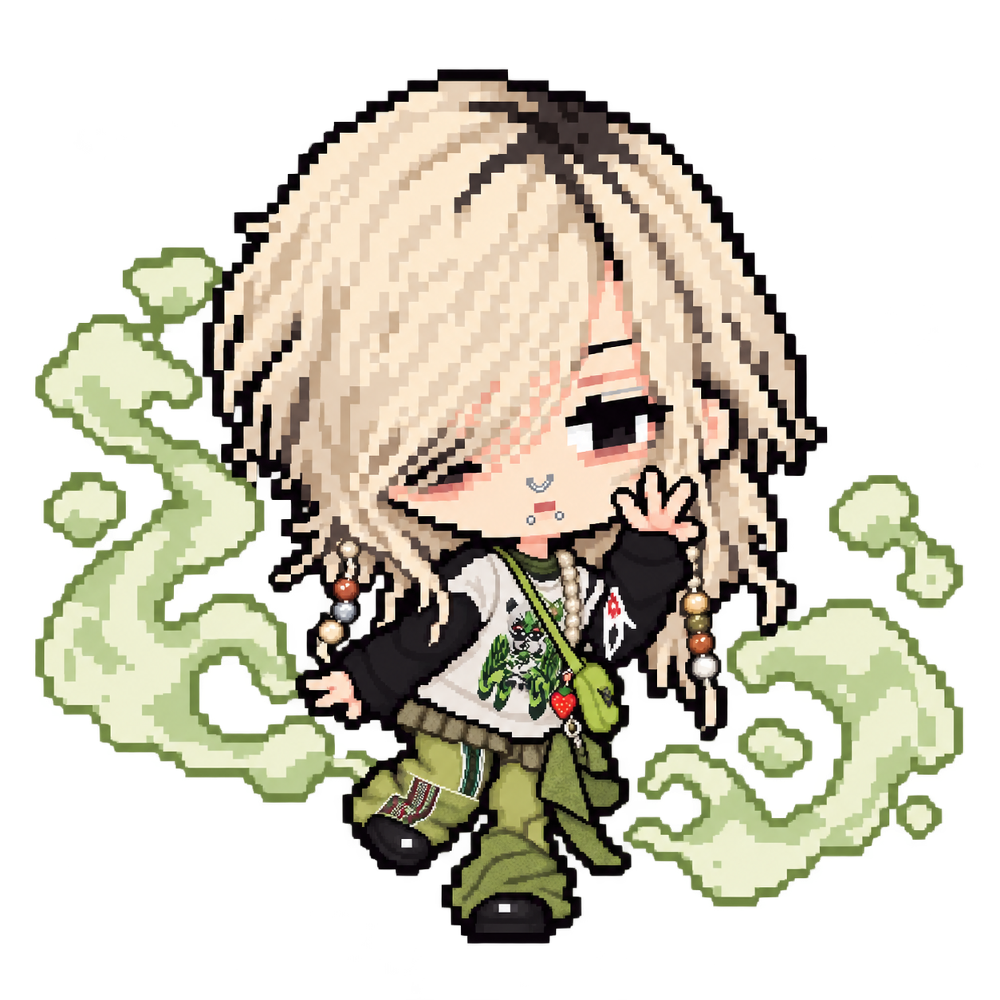
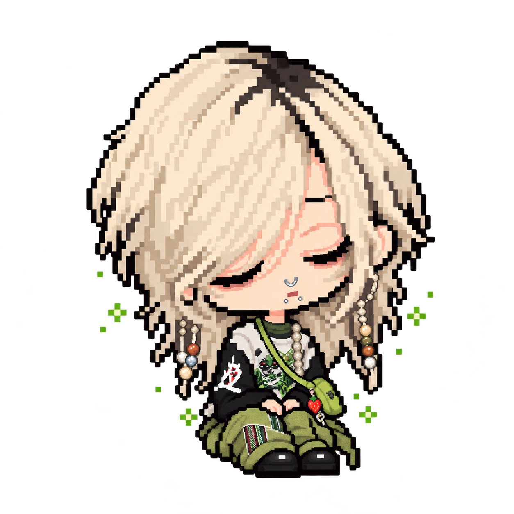
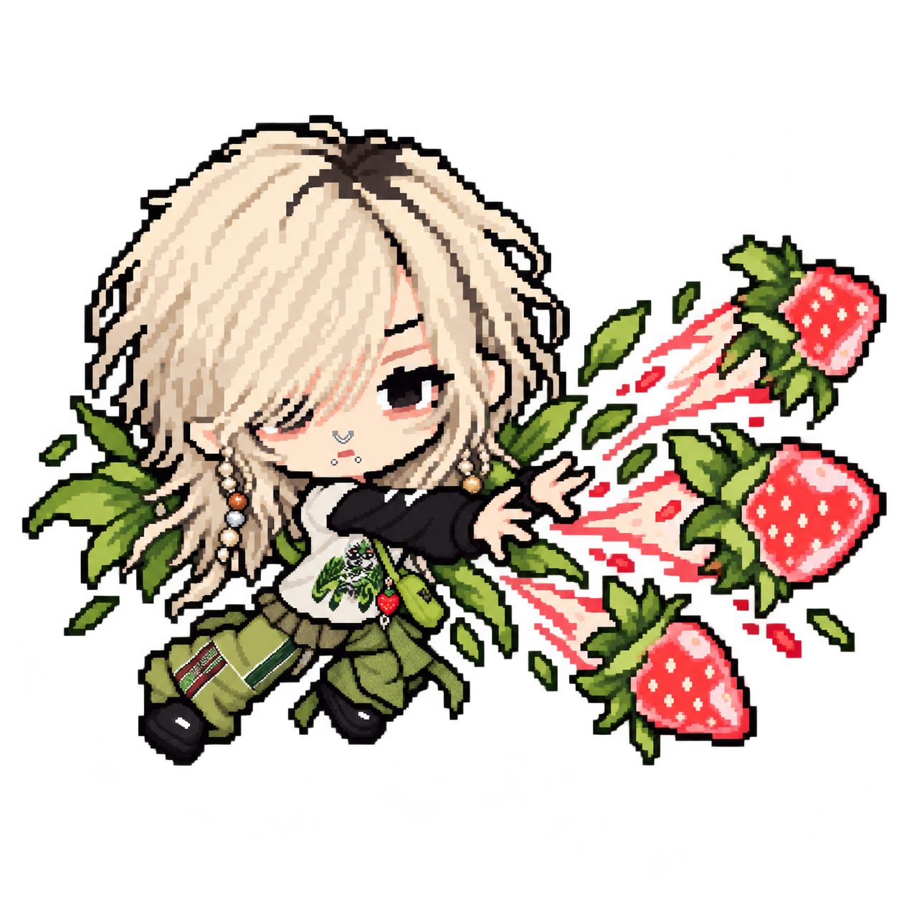

<!doctype html><html lang="zh-CN"><meta charset="utf-8"><meta name="viewport" content="width=device-width,initial-scale=1"><title>小草莓与小月 · 八招动作图</title><link rel="stylesheet" href="assets/roster-preview.css"><style>.gallery{display:grid;grid-template-columns:repeat(auto-fit,minmax(210px,1fr));gap:16px}figure{margin:0;padding:12px;background:#203b30;border:3px solid #a5bc9e}img{width:100%;height:240px;object-fit:contain;image-rendering:pixelated}figcaption{text-align:center}a{color:#ffe49b}</style><main><h1>小草莓 / 小月 · 八招动作图</h1><p><a href="index.html">返回瑞士轮</a> · <a href="全角色对战.html?left=xiaocaomei&right=xiaoyue&seed=123">两人实战</a></p><div class="gallery"><figure><figcaption>小草莓 · 烟圈套你</figcaption></figure><figure><figcaption>小草莓 · 人呢？</figcaption></figure><figure><figcaption>小草莓 · 原地放空</figcaption></figure><figure><figcaption>小草莓 · 草莓大棚</figcaption></figure><figure><figcaption>小月 · 蘑菇敲敲</figcaption></figure><figure><figcaption>小月 · 你怎么有两个</figcaption></figure><figure><figcaption>小月 · 月亮充电</figcaption></figure><figure><figcaption>小月 · 小蘑菇大宇宙</figcaption></figure></div></main></html>